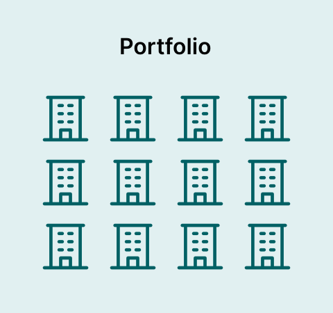
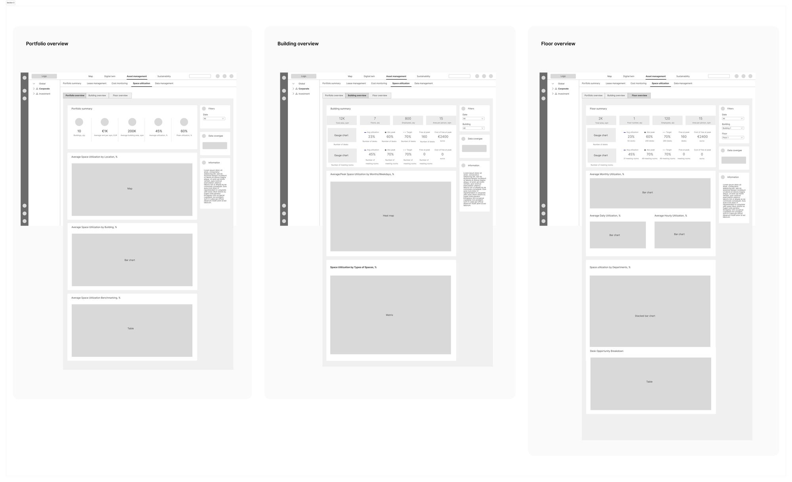
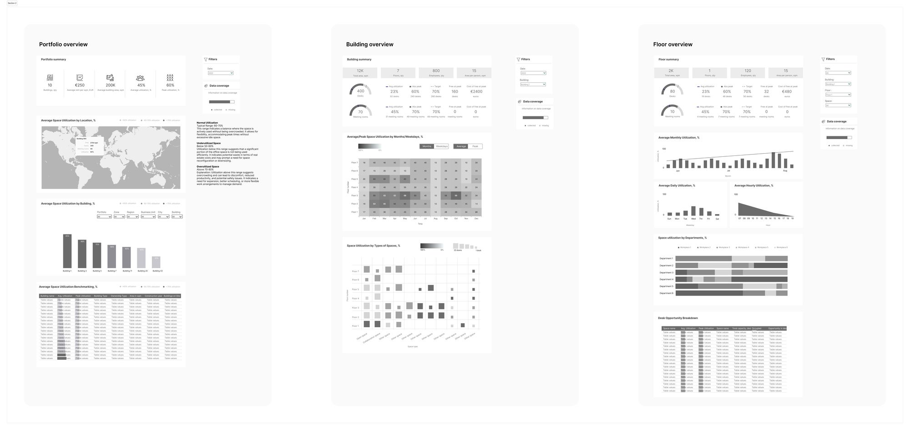

Space Utilization Dashboard for Real Estate Portfolio Management SaaS

Overview
BuildingMinds is a company that provides a digital platform aimed at transforming the real estate industry by leveraging data and technology. They focus on offering solutions for smart building management and sustainability. I joined the team as UX/UI Designer specializing in Data Visualization and was tasked to design Space Utilization Dashboard.
Problem
Organizations often struggle with underutilized or overutilized spaces, leading to wasted resources and suboptimal employee experiences.
Traditional methods of tracking space utilization are often outdated, relying on manual surveys or static data.
Without accurate data, strategic planning for future space needs, including expansions or contractions, becomes challenging.
Inefficient use of space can lead to high operational costs, including maintenance, utilities, and leasing expenses.
Inefficient space use can lead to higher energy consumption and a larger carbon footprint.
Solution
The dashboard provides detailed insights into how spaces are used, helping managers optimize layouts, allocate resources more effectively, and ensure that every square foot is used efficiently.
By offering real-time data and analytics, the dashboard enables instant decision-making and adjustments to space management strategies.
The dashboard provides trend analysis, aiding long-term planning and investment decisions.
The dashboard helps identify cost-saving opportunities by highlighting areas of inefficiency and enabling better resource allocation.
By optimizing space utilization, the dashboard supports sustainability goals, reducing energy usage and improving the building’s environmental impact.
Role
UX/UI Designer (Team of 5)
Data Visualization
Process
Research
Ideation
Design
Testing
Tools
Figma
Confluence
Slack
Microsoft Teams
Miro
Research&Analysis
User interviews
In a series of user interviews, I gathered valuable insights from facility managers, property managers, space planners, and financial managers. The goal was to understand the current challenges and needs related to space utilization to inform the design of the Space Utilization Dashboard.
Affinity mapping
After conducting interviews, I was able to organize my notes and synthesize the qualitative data into 8 themes.
Empathy map
Based on the interviews and affinity map groupings, I created empathy maps and identified two distinct user patterns: those who manage real estate portfolio, create reports for different stakeholders and make decisions about leasing and space allocation (Real Estate Strategist) and those who manage buildings, plan maintenance and operations, and address space utilization issues in individual areas (Operations Overseer).
Personas
I created two personas based on patterns I noticed from my interviews.Understanding both personas is crucial to designing an application that can help both groups. By taking their unique struggles into consideration, we can create a simple and organized design that benefits both personas.
Data
The Data team informed me that we could use real-time sensor data, booking information, and check-in/check-out records to shape the dashboard design. However, it’s important to note that not all types of data were available for every building, resulting in variability in the detail and comprehensiveness of the insights provided.

Ideation&Design
User stories
I created user stories that capture the needs and goals of each persona, helping to ensure that the Space Utilization Dashboard meets their specific requirements and enhances their workflow.
As a Facility Manager, I want to...
- access real-time data on space utilization, so that I can quickly address issues such as overcrowding and maintenance needs.
- ensure that the space utilization data is accurate and up-to-date, so that I can plan maintenance and operations effectively without errors.
- drill down from a high-level overview to floor-level data, so that I can identify and resolve specific space utilization issues in individual areas.
- see employee satisfaction survey data alongside space utilization metrics, so that I can understand how the workspace affects employee satisfaction and make improvements accordingly.
As a Property Manager, I want to...
- communicate insights to different stakeholders, so that I can provide relevant insights and address specific needs of tenants, investors, and upper management.
- analyze trends in space utilization over time, so that I can make informed decisions about leasing and space allocation.
Ideation
Based on the research findings and key user stories, I decided to structure the dashboards across three levels—portfolio, building, and floor. Each level offers a different degree of granularity, ensuring comprehensive and actionable data tailored to meet the specific needs of users.

- Portfolio summary
- Avg Space Utilization by Location (map)
- Avg Space Utilization by Building (bar chart)
- Avg Space Utilization Benchmarking (table)
- Building summary
- Avg Space Utilization by Month/Weekday (heatmap)
- Avg Space Utilization by Type of Space (matrix)
- Floor summary
- Avg Monthly, Daily, Hourly Space Utilization (bar chart)
- Avg Space Utilization by Department (stacked horizontal bar chart)
- Desk Opportunity Breakdown (table)
User flows
I mapped out each step of user's journey from Asset management page in to Space utilization page through each dashboard. User flows helped me determine the layout of each dashboard, ensuring users could complete their tasks without friction.

Low/mid-fidelity wireframes
I created low-fidelity prototypes using basic sketching tools and Figma to quickly visualize and iterate on core concepts and user flows before refining them into high-fidelity designs.


High-fidelity
For the high-fidelity design I relied on our existing design system and style guides to ensure consistency and efficiency.
Reflection
Reflecting on the Space Utilization Dashboard project, I truly valued how user interviews and research guided the design from start to finish. Understanding real user needs and pain points helped shape a dashboard that really works for them. The iterative design process, with its cycle of feedback and refinements, was crucial for making adjustments and improving the dashboard as we went along. Plus, working with interesting data and crafting engaging visualizations made the project not just challenging but also exciting, turning complex information into something users can easily understand and act on.